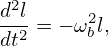

using

 | (97) |
Noting that both ∇B and κ are approximatedly along − direction, which is perpendicular to ∇ϕ, Eq. (97) is written as


if
then the drift from the local magnetic surface is outward, otherwise, the drift is inward.
Examining the right-hand side of Eq. (2.5), we find that Bp and (Ψlcfs − Ψaxis) change signs simutaneouslly when the toroidal plasma current Iϕ change sign, thus the direction of Bp(Ψlcfs − Ψaxis) is independent of the sign of Iϕ. Therefore the sign of the radial drift is independent of the sign of Iϕ.